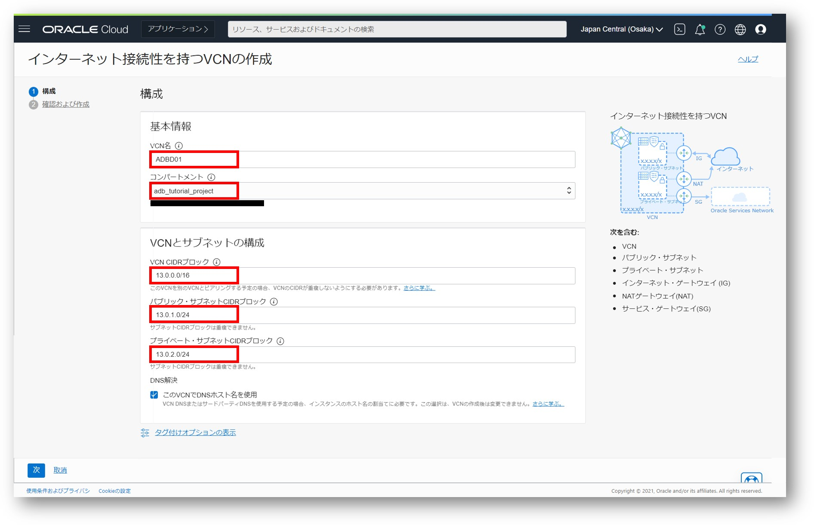
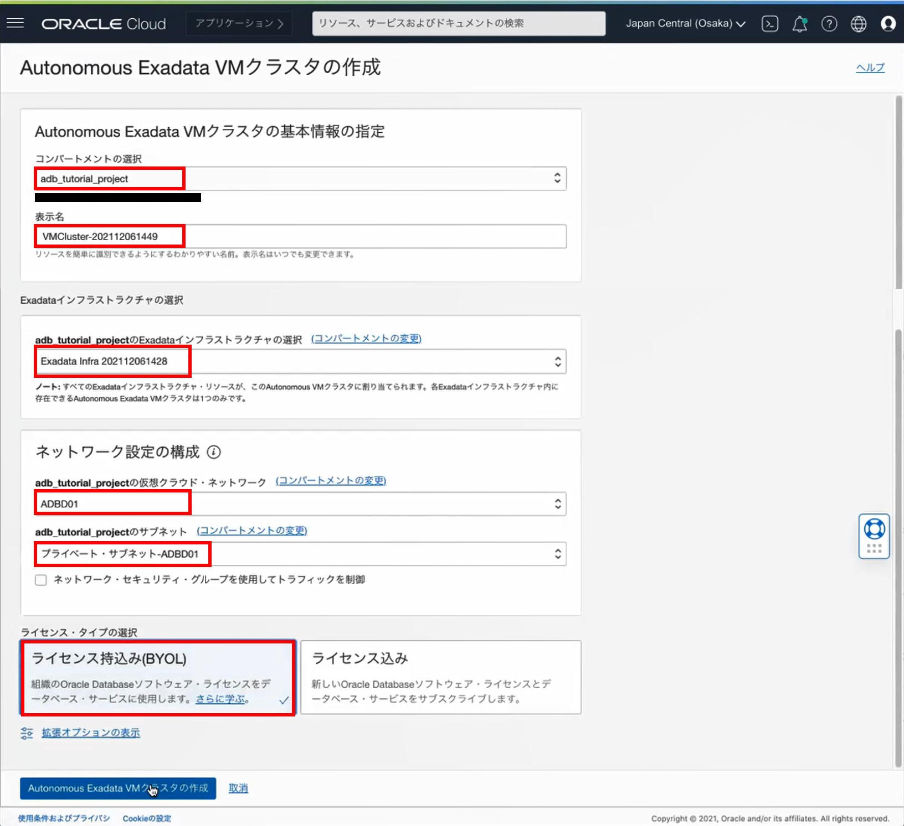

目次
所要時間 : 約6時間程程度 ※プロビジョニング時間を含みます
1. Autonomous Database Dedicated (ADB-D)とは？

Autonomous Databaseは共有型・専有型の２つのデプロイメント方式をご用意しています。
共有型のShared Exadata Infrastructure(ADB-S)はインフラストラクチャとなるExadataを共有する環境、専有型のDedicated Exadata Infrastructure(ADB-D)はExadataをお客様が専有する環境です。
ADB-Dは、複数のADBを利用するような大規模なシステムや、セキュリティ上の制約によって他のお客様との同居が許されないようなシステムで使用されることが多くなっています。
さらにADB-Dでは専有環境の持ち方として、OCIにデプロイする方式とお客様データセンターに配置できるCloud@Customer(C@C)を利用したデプロイメント方式があります。
Cloud@Customerは、データをパブリッククラウドに持ち出すことができなかったり、アプリケーションからのネットワークレイテンシが問題となるようなお客様にご利用いただくことの多いデプロイメント方式です。
本チュートリアルでは、OCI上にADB-Dをデプロイ方式を行います。
ADB-Sとの違いは？
ADB-SもADB-DもAutonomous Databaseを使用している点は同じなので、その特徴である高性能・高可用性・高いセキュリティというところは変わりません。
ADB-Dならではの特長は、Exadataを専有することにより可能な「高度な分離性」と「運用ポリシーのカスタマイズ」です。
- 高度な分離性
- 複数のレイヤーで独立性を確保
- プライベートクラウドとしての責任境界の明確化
- フリート管理者 / データベース管理者で分けることを推奨
- 運用ポリシーのカスタマイズ
- プロビジョニング、ソフトウェア更新、可用性、集約性を制御可能
ADB-Dは複数のレイヤで構成されており、それぞれ独立性が確保されています。したがって、どのレイヤでもワークロードを分離させることができるとともに、レイヤ別に管理者のロールをわけて責任境界を明確化することもできます。
次に運用ポリシーについてですが、ADB-Dでは各レイヤーをそれぞれどのようにプロビジョニング・構成・メンテナンスするかをユーザ側で制御することができます。
【補足】管理者について
ADB-Dにおける管理の領域は、OracleではPDBのレイヤを境界として「フリート管理者」および「データベース管理者」で分けることを推奨しています。
【補足】ADB-Dの課金について
ADB-DはExadataの筐体を専有してご利用いただくことになるので、Infrastructure分の課金が発生します。また、このInfrastructureの最低利用期間は48時間となっており、終了するまで課金が継続します。AEIを作成する際にはご注意ください。
次の表は、ADB-SとADB-Dの課金の違いについて記載したものです：
料金体系 OCPU + Storage OCPU + Infrastructure 課金単位 秒 時間 最低利用期間 OCPU/Storage：1分 OCPU：1時間
Infrastructure：48時間課金時間 OCPU：起動している間
Storage：終了するまでOCPU：1時間
Infrastructure：終了するまで
ADB-Dのアーキテクチャ
上記に示した通り、ADB-Dは次の４つのレイヤで構成されています。

-
Exadata Infrastructure(EXA)：シェイプやラックサイズを含む、基盤となるExadataの構成
-
Autonomous VM Cluster(AVM)：ネットワーク・VMクラスタの構成
-
Autonomous Container Database (ACD)：Oracle Databaseのコンテナデータベース
-
Autonomous Database (ADB)：ADBにあたるプラガブルデータベース
2. 環境を作成してみよう
2-1. 利用イメージ（構成図）
OCI上にADB-Dを構成する際の手順の次の通りです：

専有インフラストラクチャにADBインスタンスを作成するにはこの４つのレイヤで構成することは必須であり、AEIから上位のレイヤに向かって順に作成していく必要があります。
本チュートリアルではコンパートメントおよびユーザグループ・ポリシーの設定は構成済みであるとし、赤字で記載された項目を行います。
Exadata上のクラスタに単一のCDBを配置し、その上にPDBであるADBを配置するという最もシンプルな構成で作成します。
2-2. Autonomous Exadata Infrastructureの作成
Autonomous Exadata Infrastructure (AEI)を作成します。
-
メニューから「Oracle Database」→「Autonomous Database」をクリックします。
「専用インフラストラクチャ」の項目から「Exadata Infrastructure」を選択し、「Exadata Infrastructureの作成」をクリックします。
-
Exadata Infrastructureを作成します。
設定項目は次の通り入力してください。Exadata Infrastructureでの入力項目 基本情報の指定 コンパートメントの選択：
Autonomous Exadata Infrastructureリソースを作成するコンパートメントを選択任意 表示名：
リソースを識別するための名称。一意である必要はありません。任意
例：AEI01可用性ドメインの選択：
リソースを配置する可用性ドメインを選択任意 Exadataシステム・モデルの選択 シェイプの選択：
割り当てるOracleExadata DatabaseMachineのタイプを選択。
固定シェイプ・システム(X7-2またはX8-2)、またはスケーラブル・システム(X8M-2)から選択できます。
モデルとその構成に関する容量についての詳細な情報はこちらX8-2 システム構成の選択：
固定シェイプ・システムの場合、Quater/Half/Fullから選択します。Quarter ラック 
「Exadata Infrastructureの作成」をクリックするとプロビジョニングが始まります。
-
EXAのアイコンが緑色になったらプロビジョニング完了です。
プロビジョニングには約20秒程かかります。（2021/12時点）
2-3. ネットワーク設定
Exadata Infrastructureを配置するネットワーク環境を作成します。
ネットワークの構成は次のような構成にします：

それではリソースを作成していきましょう。
- 作成したいリソースのほとんどは、VCNウィザードを使うことで素早く作成することができます。
ウィザードでは次のリソースが自動的に作成されます：- VCN
- パブリック・サブネット
- プライベート・サブネット
- インターネット・ゲートウェイ (IG)
- NATゲートウェイ(NAT)
- サービス・ゲートウェイ(SG)
すでに作成済みのVCNがある場合はそちらを利用し、必要なリソースのみ追加しても問題ありません。ただし、その際にはVCNに作成できるリソースの制限にご注意ください。
また、仮想クラウドネットワークの作成方法についての詳細はクラウドに仮想ネットワーク(VCN)を作るを参照ください。
「VCNウィザードを起動」をクリックし、「インターネット接続性を持つVCNの作成」を選択します。
ウィザードでの設定項目は次の通り入力してください。
既存の仮想クラウドネットワークを使用する方は、「VCN CIDRブロック」「パブリック・サブネットCIDRブロック」「プライベート・サブネット」「CIDRブロック」を次のように変更します。ウィザードでの入力項目 基本情報 VCN名 任意 コンパートメント 任意 VCNとサブネットの構成 VCN CIDRブロック 13.0.0.0/16 パブリック・サブネットCIDRブロック 13.0.1.0/24 プライベート・サブネットCIDRブロック 13.0.2.0/24 
-
作成した仮想クラウドネットワークのセキュリティリストに次のイングレス・ルールを追加します。
今回はプライベート・サブネットにADB-Dを立てるので、プライベートサブネット用のセキュリティリストのイングレスルールを編集します。追加するイングレス・ルール ソース・タイプ ソースCIDR IPプロトコル ソース・ポート範囲 宛先ポート範囲 説明 CIDR 13.0.0.0/24 TCP All All 空欄 CIDR 13.0.0.0/24 ICMP All All 空欄 CIDR 13.0.1.0/24 TCP All 1521-1522 空欄 
2-4. Autonomous Exadata VMクラスタの作成
-
メニューから「Oracle Database」→「Autonomous Database」をクリックします。
「専用インフラストラクチャ」の項目から「Autonomous Exadata VMクラスタ」を選択し、「Autonomous Exadata VMクラスタの作成」をクリックします。
-
Autonomous Exadata VMクラスタを作成します。
設定項目は次の通り入力してください。Autonomous Exadata VMクラスタ作成画面での設定項目 基本情報の指定 コンパートメントの選択：
Autonomous ExadataVMクラスタを作成するコンパートメントを選択任意 表示名：
リソースを簡単に識別できるようにする名称。表示名は一意である必要はありません。任意 例：AVM01 Exadataインフラストラクチャの選択 2-1で作成したAEI(AEI01)を選択 ネットワーク構成の設定 仮想クラウドネットワークの選択 2-2で作成したVCN(ADBD01)を選択 サブネットの選択 2-2でイングレスルールを設定したプライベートサブネットを選択 ライセンス・タイプの選択：
「ライセンス持ち込み」および「ライセンス込み」より選択します。ライセンス持ち込み(BYOL) 
-
AVMのアイコンが緑色になったらプロビジョニング完了です。
プロビジョニングには約4時間半程かかります。（2021/12時点）
2-5. Autonomous Container Databasesの作成
2-4で作成したAVM上に、コンテナ・データベースを作成します。
-
2-4で作成したAVMの詳細画面から、「Autonomous Container Databaseの作成」をクリックします。

-
Autonomous Container Databaseを作成します。
設定項目は次の通り入力してください。Autonomous Container Database作成画面での設定項目 基本情報の指定 コンパートメントの選択：
Autonomous Container Databaseを作成するコンパートメントを選択AVMを配置したコンパートメントを選択 表示名：
リソースを簡単に識別できるようにする名称。表示名は一意である必要はありません。任意
例：ACD01Autonomous Data Guardの構成：
Autonomous Data Guardを有効化して、プライマリおよびスタンバイのACDを作成することができます。オプションなので任意。任意 自動メンテナンスの構成：
必要に応じて、メンテナンスの種類またはスケジュールを構成できます。任意 
【補足】自動メンテナンスの構成について
ACDは四半期に一回自動メンテナンスが行われます。このメンテナンスのスケジュールは、ユーザによるスケジュールの指定と、システムによるスケジュールのいずれかを選択することができます。
スケジュールをカスタムする場合は、次の設定画面から分かる通り細かいスケジュールを設定できます。
-
ACDのアイコンが緑色になったらプロビジョニング完了です。
プロビジョニングには約25分程かかります。（2021/12時点）
2-6. Autonomous Databaseの作成
いよいよADBインスタンスを作成します。2-5で作成したACD上にADBを作成します。
-
「Autonomous Databaseの作成」をクリックします。

-
Autonomous Databaseを作成します。
設定項目は次の通り入力してください。
※Autonomous Databaseの作成方法については 101: ADBインスタンスを作成してみよう で詳細に説明していますので、重複する部分の説明は割愛します。デプロイメント・タイプのみ異なることにご注意ください。Autonomous Database作成画面での設定項目 基本情報の指定 コンパートメントの選択 任意 表示名 任意 例：ADBD01 データベース名 任意 例：ADBD01 ワークロード・タイプの選択 任意 デプロイメント・タイプの選択 デプロイメント・タイプの選択 専有インフラストラクチャ Autonomous Container Databaseの選択：
どのACD上に構成するか選択するADBを作成したいACDを選択する データベースの構成 OCPU数 任意 OCPU自動スケーリングの有効化 任意 ストレージ 任意 管理者資格証明の作成 ユーザ名 ADMIN パスワード 任意
例：Welcome12345#ネットワーク・アクセスの構成 アクセス制御リストの編集：
特定のIPアドレスのクライアントのみにデータベースへのアクセスを制限できます。任意 
-
ADBのアイコンが緑色になったらプロビジョニング完了です。
プロビジョニングには約5分程かかります。（2021/12時点）
3. 作成したADBに接続してみよう
-
2-5で作成したADBの詳細画面を表示し、「DB接続」をクリックすると接続に必要な情報を入手できます。

-
ADBに接続します。ADB-Sに接続する場合と同様の方法で接続できます。 詳細な接続方法は、104: クレデンシャル・ウォレットを利用して接続してみよう を参照ください。
以上で、この章は終了です。
次の章にお進みください。